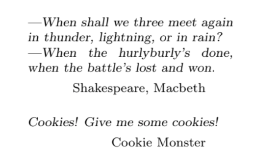

This package redefines the \chapter commands to create fancy chapter head pages
with huge chapter numbers and provides commands for adding quotations in the upper left corner of these pages.
It was written by Karsten Tinnefeld, who abandoned to work on it. This package is now
maintained by Jan Klever.
quotchap is designed to do visual formatting and build some fancy and attractive chapter headings for documents.
It buries the original \chapter[*] commands to provide a new style: Chapter number and title are set flush right, on separate lines,
and much huger as normal: The title is to be \Huge, the number is set in 100pt size, and possibly in 60% grey.
This means, of course, that some scalable font had to be chosen. We offer package
options for all the postscript fonts in the psnfss package and some other common
fonts, defaulting to Adobe’s Bookman for matters of personal taste.
You can choose any font for the chapter number by using the command \qsetcnfont.
Quotations
This package provides the feature to include some quotations right before the beginning of the chapter.
An environment is given to save quotes to be used at the beginning of the next chapter,
and an additional command gives an easy way to provide author information to the quotes.
Savequote
The savequote environment should appear at the top level, not in the docu
ment's preamble (i.e., after \begin{document}) and before the start of the chapter
you want to decorate. It has one optional argument that provides the width of the quotation paragraph.
The default is 10cm. Possibly you may want to set your quote in "quotation marks", as these marks differ from country to country, it is left to you.
Qauthor
Each quotation can consist of several paragraphs, but must end with a \qauthor{A. U. Thor} command.
This is not only provided to uphold the principles of “honour whom honour is due” but to provide the right author name
formatting and inter quotation spacing. The quotes can follow each other immediately.
The whole bunch of quotation is deleted after it has been printed once, so you
have to rewrite them when you find no way past repeating them. When you give
no quotations for some chapter, the upper left area of the corresponding page will be simply void.
qsetcnfont
If you want to use a font for the chapter number, that is not available as
package optionen, you can set it with \qsetcnfont{}. For example: \qsetcnfont{pzc} to use Zapf Chancery.
Example
Let's take a look at an example:
CODE\begin{savequote}[45mm]
---When shall we three meet again
in thunder, lightning, or in rain?
---When the hurlyburly’s done,
when the battle’s lost and won.
\qauthor{Shakespeare, Macbeth}
Cookies! Give me some cookies!
\qauthor{Cookie Monster}
\end{savequote}
\chapter{Classic Sesame Street}

Document Options
Printing the chapter number in bold and that big a font uses quite some ink on
the paper. Thus it is strongly recommended to use the grey option (which is
enabled by default and disabled by specifying nogrey) that improves the quality
by printing the number in 60% grey. The color package is used to set the colour
chaptergrey, redefining this colour may produce even more colourful effects.
The color package is \Required without any option, if you want to specify
some, include the color package before the quotchap package.
The other options are used to select a title font, they are all self-explaining
and thus simply listed here: